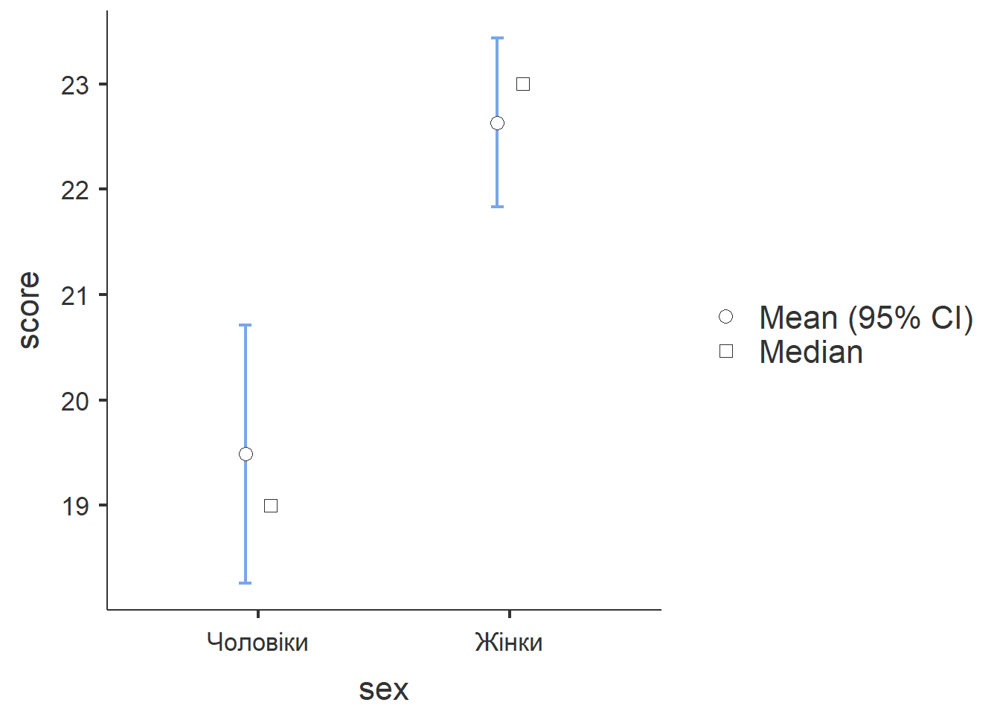
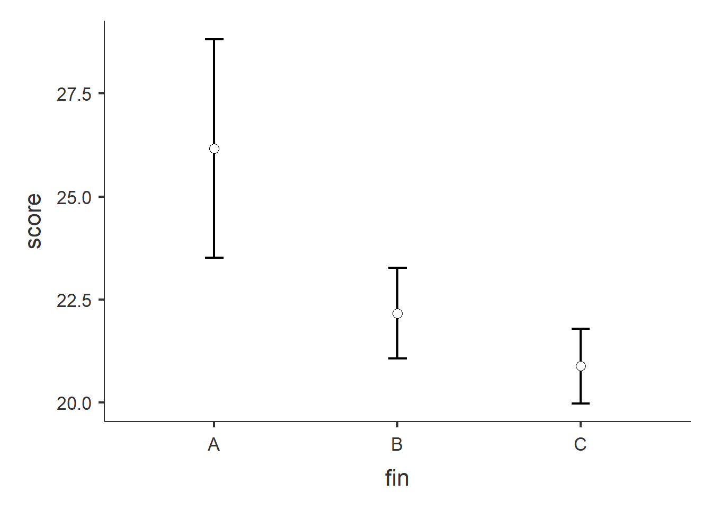

library(jmv)
ttestIS(
formula = score ~ sex, data = pss,
welchs = TRUE, mann = TRUE, hypothesis = "twoGreater",
norm = TRUE, eqv = TRUE,
effectSize = TRUE, ciES = TRUE,
desc = TRUE, plots = TRUE
)Порівняння середніх
Дві незалежні сукупності
Після підготовки даних можна перейти до застосування статистичних критеріїв, призначених для перевірки гіпотез про існування відмінностей і зв’язків у популяції, що вивчається. Почнемо з порівняння двох незалежних груп ¬– чоловіків і жінок – за середнім значенням і дисперсією. Наступний блок містить виклик функції ttestIS(), яка виводить велику кількість корисної табличної і графічної інформації для такого порівняння:
Фрагмент коду 8. Замовлення t-критерію Ст’юдента для незалежних груп
Аргументу formula передається вираз, який містить символ ~ (тильда). Зліва від тильди вказано залежну неперервну змінну – сумарний бал score за шкалою стресу PSS. Після тильди йде незалежна дихотомічна змінна sex, за значеннями якої досліджувані потрапляють в одну з двох категорій за статтю. Додатково до t-критерію Ст’юдента для незалежних сукупностей функції замовляється обчислення критерію Уелча (аргумент welchs = TRUE), непараметричного критерію Манна-Уітні (аргумент mann = TRUE), величини ефекту d Коена і його довірчих інтервалів (аргументи effectSize = TRUE і ciES = TRUE), критерію Лівена для перевірки гіпотези про рівність дисперсій в двох сукупностях (аргумент eqv = TRUE), а також побудова таблиці з описовими статистиками і діаграми (аргументи desc = TRUE, plots = TRUE). Нарешті, аргумент hypothesis = “twoGreater” визначає тип альтернативної гіпотези: «у другій групі (тобто, у жінок) середнє значення є більшим у популяції».
Як можемо бачити у наступній таблиці, всі три критерія дають можливість відкинути нульову гіпотезу про відсутність відмінностей середніх значень суб’єктивного переживання стресу чоловіків і жінок у популяції студентів НаУКМА в 2019 році на рівні α = 0.001 й прийняти альтернативну гіпотезу: середнє значення для чоловіків є меншим, ніж у жінок.
Таблиця 3. Критерії для порівняння двох незалежних груп
INDEPENDENT SAMPLES T-TEST
Independent Samples T-Test
──────────────────────────────────────────────────────────
Statistic df p
──────────────────────────────────────────────────────────
score Student's t -4.17 460 < .001
Welch's t -4.21 255 < .001
Mann-Whitney U 16683 < .001
──────────────────────────────────────────────────────────
Note. Hₐ μ <sub>Чоловіки</sub> < μ <sub>Жінки</sub>Опис величини ефекту
────────────────────────────────────────────────────────────────────────────────
Effect Size Lower Upper
────────────────────────────────────────────────────────────────────────────────
Student's t Cohen's d -0.427 -0.629 -0.224
Welch's t Cohen's d -0.429
Mann-Whitney U Rank biserial correlation 0.244
────────────────────────────────────────────────────────────────────────────────Перевірка припущень
ASSUMPTIONS
Normality Test (Shapiro-Wilk)
─────────────────────────────
W p
─────────────────────────────
score 0.994 0.073
─────────────────────────────
Note. A low p-value
suggests a violation of
the assumption of
normality
Homogeneity of Variances Test (Levene's)
────────────────────────────────────────
F df df2 p
────────────────────────────────────────
score 0.276 1 460 0.600
────────────────────────────────────────
Note. A low p-value suggests a
violation of the assumption of
equal variancesОписові статистики по групах
Group Descriptives
───────────────────────────────────────────────────────────────
Group N Mean Median SD SE
───────────────────────────────────────────────────────────────
score Чоловіки 135 19.5 19.0 7.26 0.625
Жінки 327 22.6 23.0 7.41 0.410
─────────────────────────────────────────────────────────────── Величина ефекту d дорівнює -0.427 (від’ємне значення з’явилося внаслідок того, що від меншого середнього віднімалося більше). За Дж. Коеном, це ефект майже середньої сили. Що важливіше, ми отримали не тільки точкову оцінку величини ефекту, але й 95-відсотковий довірчий інтервал, який несе інформацію про точність цієї оцінки: в популяції величина ефекту може знаходитися в проміжку від слабкого до посереднього:
Критерій Лівена для цих даних дорівнює 0.276 з ступенями свободи 1 і 460 (таблиця не наводиться за браком місця). Таке або ще більше значення критерію, коли нульова гіпотеза про рівність дисперсій в популяції є вірною, можна отримати з ймовірністю 0.600 (р-значення). Отже, на рівні статистичної значущості α = 0.05 ми не можемо відкинути нульову гіпотезу про рівність дисперсій на користь альтернативної. Нарешті, таблиця з описовими статистиками для чоловіків і жінок дозволяє зрозуміти, яким є значення стресу для типового представника (середнє і медіана), з якою точністю вдалося оцінити середнє значення у популяції на основі вибіркових даних (стандартна похибка середнього SE), наскільки варіативними є дані в кожній групі (стандартне відхилення SD).
На основі цих описових статистик будується графік з довірчими інтервалами навколо середніх значень, який більш наочно передає знайдені відмінності у рівні суб’єктивного стресу.

На графіку подані типові значення, довірчі інтервали для середніх
Більше двох незалежних сукупностей
Якщо кількість груп, які порівнюються за середнім значенням, дві чи більше, дослідник може використати однофакторний дисперсійний аналіз для перевірки альтернативної гіпотези про те, що відмінності існують на рівні популяцій. На сьогоднішній день в методологічній літературі існує думка, що найкращим показником величини ефекту в цьому випадку є ω^2, а не η^2 – звичний показник частки поясненої дисперсії залежної змінної у вибірці, яка є зміщеною оцінкою поясненої дисперсії у популяції.
Продемонструю використання однофакторного дисперсійного аналізу на прикладі даних про стрес. Нехай залежною змінною виступить score, сумарний бал по шкалі суб’єктивного стресу PSS, а незалежною – категоріальна змінна (фактор) fin, фінансовий стан сім’ї студента після перекодування. Фактор fin має три рівні після перекодування змінної fin_state: А – не вистачає грошей на їжу або вистачає на їжу, але одяг купувати вже складно, В – доводиться економити, щоб купити коштовні речі, С – можуть купувати деякі коштовні речі або можуть купувати все, що хочуть. Оскільки нестача фінансових ресурсів може виступати однією з прямих чи опосередкованих причин стресу, варто перевірити гіпотезу про існування відмінностей у сприйнятті стресу студентами в залежності від потрапляння в категорію А, В чи С. Для проведення аналізу скористаємося функцією ANOVA() з пакету jmv:
Таблиця 5. Виклик однофакторного дисперсійного аналізу
library(jmv)
ANOVA(
formula = score ~ fin, data = pss,
effectSize = "omega", homo = TRUE, norm = TRUE,
postHoc = ~ fin, postHocCorr = "scheffe",
emMeans = ~ fin, emmTables = TRUE
)Аргументи formula і data грають ту саму роль, що й у прикладі з t-критерієм Ст’юдента, аргументу effectSize передається назва показника величини ефекту, аргументи postHoc і postHocCorr визначають, за якою змінною проводиться попарний аналіз різниці середніх та метод корекції статистичної значущості при множинних порівняннях. Аргументи homo і norm замовляють перевірку припущень про однорідність дисперсій і нормальність розподілу залежної змінної, важливі умови для застосування дисперсійного аналізу. Нарешті, аргументи emMeans і emmTables замовляють виведення таблиці і графіку з описовими статистиками по групах. Наведу лише дві таблиці з великої кількості результатів, які генерує ця функція:

Таблиця 6. Таблиця дисперсійного аналізу і величина ефекту
ANOVA - score
───────────────────────────────────────────────────────────────────
Sum of Squares df Mean Square F p ω²
───────────────────────────────────────────────────────────────────
fin 808 2 403.8 7.38 < .001 0.027
Residuals 25103 459 54.7
─────────────────────────────────────────────────────────────────── Отже, F критерій виявився статистично значущим на рівні 0.001, а величина ефекту вказує на слабку залежність. Оскільки критерії Лівена і Шапіро-Уілка виявилися статистично незначущими (тобто, дані не суперечать припущенням про те, що залежна змінна має нормальний розподіл і її дисперсія однакова в трьох групах), ми можемо використовувати F критерій для висновку про рівність середніх.
Зверніть увагу, що ми отримали лише точкову оцінку величини ефекту, отже, потрібні додаткові дії для побудови довірчого інтервалу. Скористаємося функцією omega.F() з пакету MOTE. Значення для її аргументів візьмемо з таблиці дисперсійного аналізу, яка була наведена вище:
ANOVA
ANOVA - score
────────────────────────────────────────────────────────────────────────────────
Sum of Squares df Mean Square F p ω²
────────────────────────────────────────────────────────────────────────────────
fin 808 2 403.8 7.38 < .001 0.027
Residuals 25103 459 54.7
────────────────────────────────────────────────────────────────────────────────
ASSUMPTION CHECKS
Homogeneity of Variances Test (Levene's)
────────────────────────────────────────
F df1 df2 p
────────────────────────────────────────
0.753 2 459 0.471
────────────────────────────────────────
Normality Test (Shapiro-Wilk)
─────────────────────────────
Statistic p
─────────────────────────────
0.995 0.118
─────────────────────────────
POST HOC TESTS
Post Hoc Comparisons - fin
───────────────────────────────────────────────────────────────────────────
fin fin Mean Difference SE df t p-scheffe
───────────────────────────────────────────────────────────────────────────
A - B 3.99 1.462 459 2.73 0.025
- C 5.28 1.427 459 3.70 0.001
B - C 1.28 0.725 459 1.77 0.210
───────────────────────────────────────────────────────────────────────────
Note. Comparisons are based on estimated marginal means
ESTIMATED MARGINAL MEANS
FIN
Estimated Marginal Means - fin
──────────────────────────────────────────
fin Mean SE Lower Upper
──────────────────────────────────────────
A 26.2 1.350 23.5 28.8
B 22.2 0.561 21.1 23.3
C 20.9 0.460 20.0 21.8
────────────────────────────────────────── Фрагмент коду 9. Визначення довірчих інтервалів для величини ефекту ω²
library(MOTE)
result <- omega.F(
dfm = 2, dfe = 459, Fvalue = 7.383,
n = 462, a = 0.05
)
unlist(result[1:3]) omega omegalow omegahigh
0.02689 0.00398 0.06059 Отримані результати подаються в публікації у наступному вигляді: ω^2=.027, 95% CI [0.004, 0.061]. Отже, ми отримали слабкий ефект, який в популяції всіх студентів НаУКМА 2019 року може насправді знаходитися у діапазоні від тривіально малого до посереднього. Для точнішої оцінки знадобиться більша вибірка. Зазвичай після того, як дослідник приймає загальну альтернативну гіпотезу про існування відмінностей середніх між якимись групами, цілком логічним є поставити питання: які саме групи відрізняються (Post Hoc латиною означає «після того, як»)? Наступна таблиця містить результати всіх попарних порівнянь груп:
Таблиця 7. Попарні порівняння середніх значень
Post Hoc Comparisons - fin
─────────────────────────────────────────────────────────────
fin fin Mean Difference SE df t p-tukey
─────────────────────────────────────────────────────────────
A - B 3.99 1.462 459 2.73 0.018
- C 5.28 1.427 459 3.70 < .001
B - C 1.28 0.725 459 1.77 0.181
─────────────────────────────────────────────────────────────Отже, лише найбідніші досліджувані статистично значущо відрізняються від представників двох інших категорій, різниця середніх за показником суб’єктивного стресу оцінюється в 3.99 і 5.38 балів за шкалою PSS відповідно.